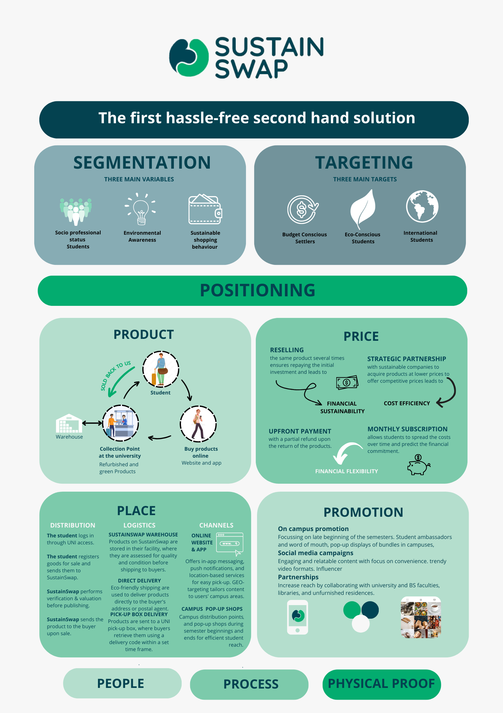

SustainSwap is a student-to-student second-hand marketplace: students send items in through their university, SustainSwap verifies and refurbishes them, and buyers collect on campus or get eco-friendly delivery. The plan covers the full commercial build — segmentation, pricing, campus logistics and ambassador rollout — not just the concept.
- Focus Circular economy · reuse · student affordability
- Format Investor pitch deck, marketing poster, product demo